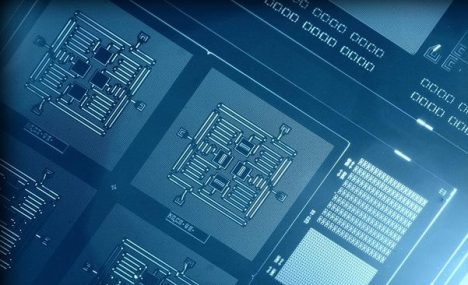

1ºBimestre

Química na area de Deselvolvimento de Sistemas, está presente no nosso dia-a-dia. Quando o assunto é computador é possível perceber a presença da química nos chips, no plástico, no vidro do monitor e nos metais dos circuitos e gabinetes, dentre outros locais. Devido à importância da química para o desenvolvimento de sistemas e informatica, esse trabalho teve como objetivo demonstrar sua contribuição no decorrer da evolução das gerações dos computadores, focando principalmente a parte de hardware.
2ºBimestre
Histórico e desenvolvimento dos modelos atômicos
Modelos atômicos foram sugeridos, desde a Antiguidade, por gregos como Demócrito de Abdera (420 a.C.) e Leucipo (450 a.C.), que já afirmavam que a matéria era composta por pequenas partículas que receberam a denominação de átomo, palavra que em grego significa indivisível. Esse modelo é um modelo filosófico sem forma definida e sem núcleo, e não tem nenhuma base científica.
Desde então passou por modelos propostos por Dalton (1803) e por Thomson (1898), até chegar ao modelo mais atual que foi criado por Rutherford, em 1911. Segundo ele, o átomo consiste em um núcleo pequeno que compreende toda a carga positiva e praticamente a massa do átomo, e também de uma região extranuclear que é um espaço vazio onde só existem elétrons distribuídos.
Mais tarde, em 1914, Rutherford conceituou o núcleo atômico que é uma partícula que tem uma massa maior que a do elétron, mas se tratando da carga, o núcleo e o elétron possuem cargas iguais, mas de sinais opostos. Os elétrons possuem carga negativa e o núcleo possui carga positiva.
Rutherford, em 1920, afirmou que essa carga positiva deve-se à presença de prótons, nome proposto por ele. Em 1913, o átomo passou por um aperfeiçoamento realizado pelo físico dinamarquês Niels Bohr, que dividiu a eletrosfera em sete camadas, chamadas atualmente de camadas de valência.